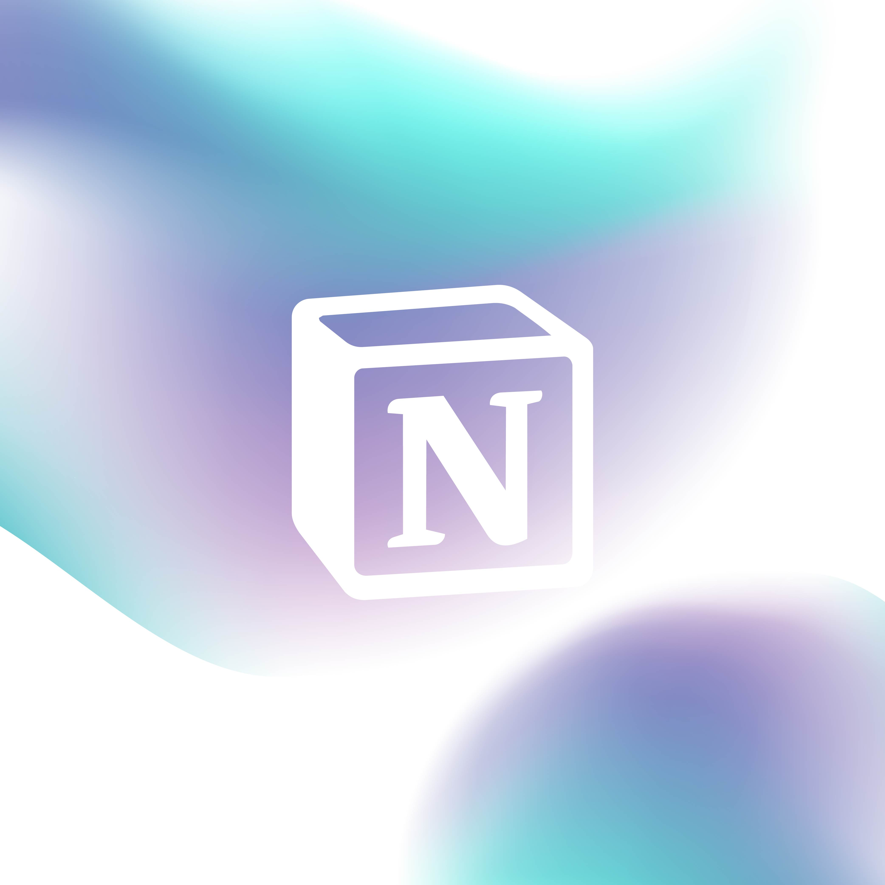
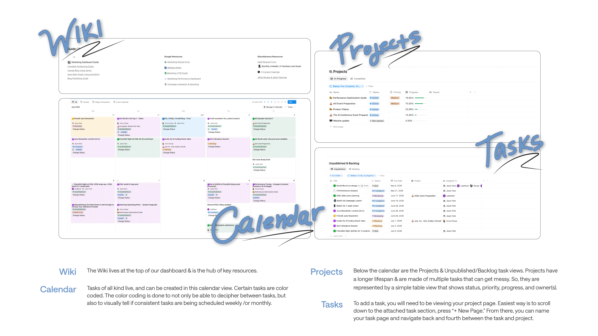

FriendliAI's PM for Marketing was made up of a loosly structured Google drive. While the content included was important, and is still a key part of Marketing's effort, there was no way of tracking campaign progress, task management, and maintain visibility.
This project aimed to create FriendliAI's first scalable marketing PMO system built from scratch, and hosted on Notion.
